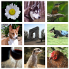
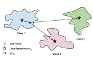
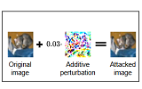
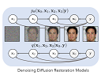
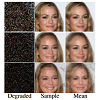
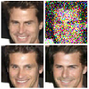

Bahjat Kawar
Ph.D. Computer Science Student at Technion. Research Intern at Google.Researching machine learning & computer vision. Interested in diffusion models.
LinkedIn - GitHub - Twitter - Google Scholar - Semantic Scholar
About Me
I am a Ph.D. computer science student at Technion, researching computer vision and machine learning under the supervision of Prof. Michael Elad. I am interested in inverse problems, generative models, representation learning, and diffusion models. I am currently spending the summer as a research intern at Google Research in Tel Aviv.
Prior to my Ph.D. studies, I obtained my B.Sc. in computer science from Technion, summa cum laude, as the class valedictorian. I also worked as a research intern at Cornell Tech in New York City, and as a freelance web and app developer.
Publications
|  | Bahjat Kawar, Roy Ganz, Michael Elad Enhancing Diffusion-Based Image Synthesis with Robust Classifier Guidance Preprint, arXiv:2208.08664. |
|  | Roy Ganz, Bahjat Kawar, Michael Elad Do Perceptually Aligned Gradients Imply Adversarial Robustness? ICMLW 2022, in ICML Workshop on New Frontiers in Adversarial Machine Learning. |
|  | Tsachi Blau, Roy Ganz, Bahjat Kawar, Alex Bronstein, Michael Elad Threat Model-Agnostic Adversarial Defense using Diffusion Models Preprint, arXiv:2207.08089. |
|  | Bahjat Kawar, Michael Elad, Stefano Ermon, Jiaming Song Denoising Diffusion Restoration Models NeurIPS 2022, in Neural Information Processing Systems. [website] [code] |
|  | Bahjat Kawar, Gregory Vaksman, Michael Elad SNIPS: Solving Noisy Inverse Problems Stochastically NeurIPS 2021, in Neural Information Processing Systems. [code] |
|  | Bahjat Kawar, Gregory Vaksman, Michael Elad Stochastic Image Denoising by Sampling from the Posterior Distribution ICCVW 2021, in ICCV Workshop on Advances in Image Manipulation. |
Awards
I am a recipient of the following awards:- Technion MLIS-TCE Best Paper Award 2022
- Council for Higher Education VATAT Scholarship 2021
- Apple Excellence Award 2019
- Ernest Freudman Fellowship 2018
- LAPIDIM Excellence Program 2018-2020
- Technion President's List Award for Excellence (6×) 2017-2020
- NeurIPS 2021, 2022
- ICML 2022
- AAAI 2023
- Workshops at ICCV 2021, ICLR 2022, ICML 2022
- IEEE Transactions on Computational Imaging 2022
Teaching
I teach / have taught the following courses as a TA:- Diffusion Diffusion Diffusion (236610) – Winter 2022-2023
- Project in Image Processing (234329) – Winter 2021-2022
- Operating Systems (234123) – Spring 2020, Winter 2020-2021, Spring 2021
- Logic Design (234262) – Winter 2018-2019